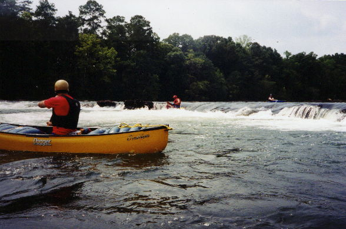
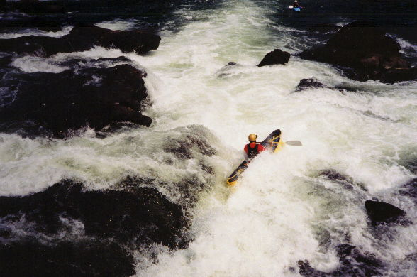
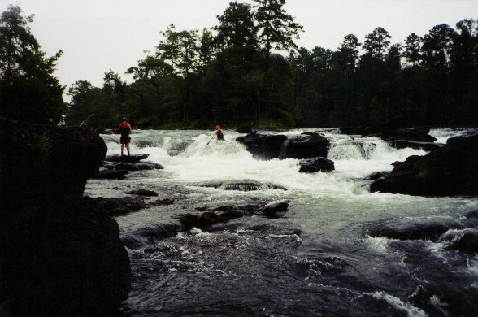
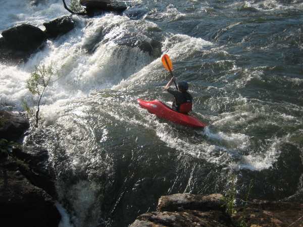

Tallapoosa River
|  | Ken Pevahouse runs a typical ledge at very low water as our Dr. B looks on. |
|  | Dave Branham, off line but looking good. This is the big rapid at the end at very low water. |
|  | Another view of the same rapid. The author, however, is on line :-) |
|  | Steve Doyle at the left slot of Tallapoosa Falls
at around 6400 CFS release, September 2007. Photo by Ray Morton |